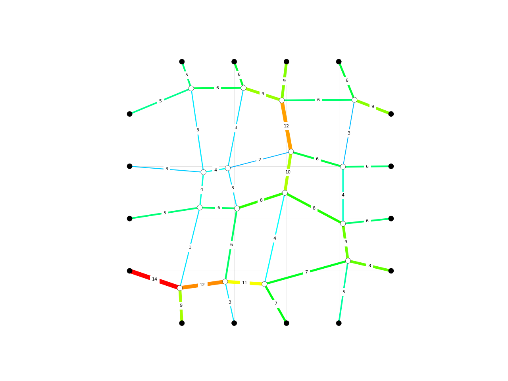

dr
-
compas.numerical.dr(vertices, edges, fixed, loads, qpre, fpre, lpre, linit, E, radius, kmax=100, dt=1.0, tol1=0.001, tol2=1e-06, c=0.1, callback=None, callback_args=None)[source] Implementation of dynamic relaxation with RK integration scheme in pure Python.
- Parameters
vertices (list) – XYZ coordinates of the vertices.
edges (list) – Connectivity of the vertices.
fixed (list) – Indices of the fixed vertices.
loads (list) – XYZ components of the loads on the vertices.
qpre (list) – Prescribed force densities in the edges.
fpre (list) – Prescribed forces in the edges.
lpre (list) – Prescribed lengths of the edges.
linit (list) – Initial length of the edges.
E (list) – Stiffness of the edges.
radius (list) – Radius of the edges.
kmax (int, optional) – Maximum number of iterations.
dt (float, optional) – The time step.
tol1 (float, optional) – Convergence criterion for the residual forces.
tol2 (float, optional) – Convergence criterion for the displacements in between interations.
c (float, optional) – Damping factor for viscous damping.
callback (callable, optional) – A user-defined callback that is called after every iteration.
callback_args (tuple, optional) – Additional arguments to be passed to the callback.
Examples
import random import compas from compas.datastructures import Network from compas.plotters import NetworkPlotter from compas.utilities import i_to_rgb from compas.numerical import dr # make a network # and set the default vertex and edge attributes network = Network.from_obj(compas.get('lines.obj')) dva = { 'is_fixed': False, 'px': 0.0, 'py': 0.0, 'pz': 0.0, 'rx': 0.0, 'ry': 0.0, 'rz': 0.0, } dea = { 'qpre': 1.0, 'fpre': 0.0, 'lpre': 0.0, 'linit': 0.0, 'E': 0.0, 'radius': 0.0, } network.update_default_vertex_attributes(dva) network.update_default_edge_attributes(dea) # identify the fixed vertices # and assign random prescribed force densities to the edges for key, attr in network.vertices(True): attr['is_fixed'] = network.vertex_degree(key) == 1 for u, v, attr in network.edges(True): attr['qpre'] = 1.0 * random.randint(1, 7) # extract numerical data from the datastructure vertices = network.get_vertices_attributes(('x', 'y', 'z')) edges = list(network.edges()) fixed = network.vertices_where({'is_fixed': True}) loads = network.get_vertices_attributes(('px', 'py', 'pz')) qpre = network.get_edges_attribute('qpre') fpre = network.get_edges_attribute('fpre') lpre = network.get_edges_attribute('lpre') linit = network.get_edges_attribute('linit') E = network.get_edges_attribute('E') radius = network.get_edges_attribute('radius') # make a plotter for (dynamic) visualization # plot the lines of the original configuration of the network as reference plotter = NetworkPlotter(network) lines = [] for u, v in network.edges(): lines.append({ 'start': network.vertex_coordinates(u, 'xy'), 'end' : network.vertex_coordinates(v, 'xy'), 'color': '#cccccc', 'width': 0.5 }) plotter.draw_lines(lines) # run the dynamic relaxation # update vertices and edges # visualize the final geometry # color the edges according to the size of the forces # set the width of the edges proportional to the internal forces xyz, q, f, l, r = dr(vertices, edges, fixed, loads, qpre, fpre, lpre, linit, E, radius, kmax=100) for key, attr in network.vertices(True): attr['x'] = xyz[key][0] attr['y'] = xyz[key][1] attr['z'] = xyz[key][2] for index, (u, v, attr) in enumerate(network.edges(True)): attr['f'] = f[index] attr['l'] = l[index] fmax = max(network.get_edges_attribute('f')) plotter.clear_vertices() plotter.clear_edges() plotter.draw_vertices( facecolor={key: '#000000' for key in network.vertices_where({'is_fixed': True})} ) plotter.draw_edges( text={(u, v): '{:.0f}'.format(attr['f']) for u, v, attr in network.edges(True)}, color={(u, v): i_to_rgb(attr['f'] / fmax) for u, v, attr in network.edges(True)}, width={(u, v): 10 * attr['f'] / fmax for u, v, attr in network.edges(True)} ) plotter.show()
